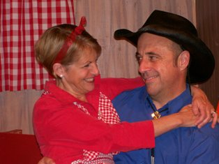

Just My TYPE
We all have heard the saying “Opposites attract.”
But there is no saying for what happens after that.
What used to seem adorable
In time becomes deplorable
And if you could, you would just give ‘em back!
Sound familiar? Can this marriage be saved? Just My TYPE, an original musical comedy, explores how the four pairs of personality traits, based on the Myers-Briggs Type Indicator® assessment, affect one’s loves and life. As the show opens, psychologists Kate and Ben face a deadline to write a book on personality types. They use four couples from their own practice to illustrate what happens when opposites mate, i.e. an introvert marries an extrovert; a thinker weds a feeler. The couples’ attractions, conflicts, and resolutions (or lack thereof) are played out as scenes move between five settings from Puget Sound to Santa Monica to Big Stone Gap, VA. Kate and Ben learn something about themselves in the process. So will the audience. Twenty-one original songs set just the right tone, and two actors play all ten roles.
BIOS
Composer and lyricist RITA ABRAMS has won 2 Emmy Awards, 31 ASCAP Awards, and 3 San Francisco Bay Area Theatre Critics Circle Awards for her musical comedy collaborations, which include Men are from Mars, Women are from Venus, New Wrinkles, and For Whom the Bridge Tolls. Her Sony/BMG comedy albums with Dr. Elmo have earned her a gold record, and her album containing her evergreen hit "Mill Valley" has just been re-released by Japan's MUZAK. Rita's songs appear in Cunard Cruise lines' production, Crazy for Love, and in McGraw-Hill Publisher's newest educational program. And she is the composer of the new Pride and Prejudice musical which will have its world premiere in London November 2012.
Co-author MICHAEL SALLY is a well-known actor in the San Francisco Bay Area. His many theatre credits are Lips Together, Teeth Apart (New Conservatory Theatre), Blithe Spirit (Palo Alto Players), The Little Foxes & The Foreigner (Hillbarn), The Government Inspector & Breaking Up is Hard to Do (Bus Barn Stage Company), 25th Annual Putnam County Spelling Bee (Masquers Theater), Don’t Dress for Dinner & Moonlight and Magnolias (Douglas Morrisson). He recently directed Arsenic and Old Lace and will be directing Lost in Yonkers (Chanticleers ). By day, he is a private psychotherapist, specializing in couples therapy.
Robert A. Freedman Dramatic Agency, Inc.
1501 Broadway, Suite 2310
New York, NY 10036
212-840-5760